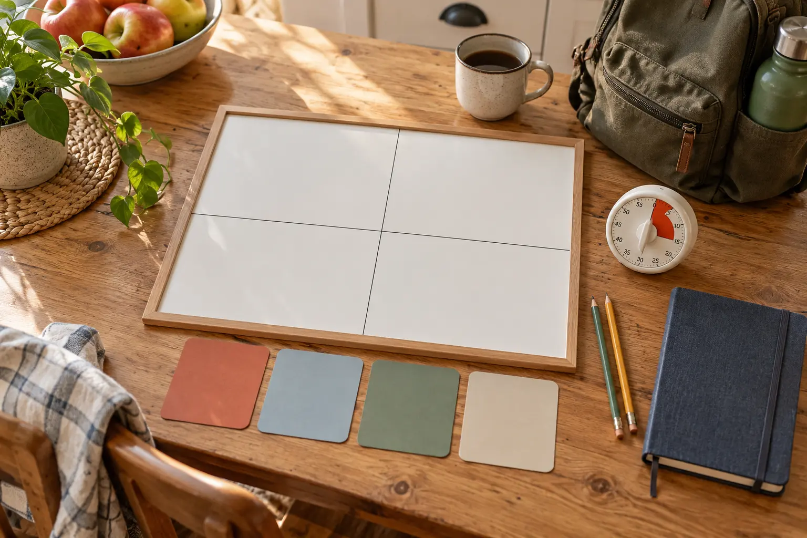

Tonight / after school
Window: 10–90 minutes. Test: can it fit before dinner, homework, bedtime and daylight?
AT HOME · 20 MINUTES · NO-SPEND
The family calendar should answer what is possible before everyone starts pitching what sounds fun. Build one visible board around time, energy, cost and weather—then stop planning.

Families often mix four different questions: What can we do tonight? What should we protect this weekend? What belongs on the next school break? What can we do at home when nobody wants to leave? The answers compete for the same attention even though they have different lead times, costs and energy requirements.
A visible routine helps because it makes constraints shared instead of leaving one adult to carry them mentally. The American Academy of Pediatrics notes that regular, predictable routines help organize family life. That does not mean every evening should be scheduled or that a chart fixes family stress. This is simply a short meeting that converts vague possibility into a few finishable choices.
Use one sheet of paper, four index cards or a small dry-erase board; a pencil; a timer; the school calendar; the family calendar; and any work, custody, practice or transportation information that actually controls availability. Cost: $0 if you use paper already in the house. Ages 6–12 can participate, but adults own money, transportation, medical needs, reservations and the final safety call.
Do not open six event tabs before the meeting starts. Bring only commitments and one or two ideas already verified. The board should reduce uncertainty, not import the whole internet into the kitchen.
List the immovable items first: school, work, appointments, practices, sleep, shared-custody handoffs, transportation limits and existing obligations. Add the expected weather decision point—not a forecast copied five days too early. If a bill, ticket or admission price matters, write the amount. The plan must fit what remains.
Each person chooses a simple energy state: green, yellow or red. Green means normal capacity. Yellow means one short plan with an easy exit. Red means home, recovery or a ten-minute version. No one has to defend a red day with a speech. Adults can override an activity for health, safety or household needs, but should say the constraint plainly.
Check four resources: adult attention, transportation, spending room and recovery time. A two-hour outing that requires 90 minutes of driving, a meal out and a late bedtime is not a two-hour plan.
Tonight: use a short known option such as the 30-minute nature mission or the 45-minute library plan. Weekend: choose one anchor from the current October 3–4 family roundup or an evergreen destination. Break: identify one trip or home project that needs lead time. At home: choose a no-drive backup that can start with supplies already present.
Children can nominate ideas, but the board accepts only options that pass the time, cost, safety and adult-capacity checks. “Maybe amusement park” is not a plan. “Saturday 9:00, leave by 1:00, tickets checked Friday, rain backup at home” is.
Every non-home plan gets one owner and one next action: check official hours, make the reservation, inspect the gear, download the map, confirm the ride or set the spending cap. Write the deadline. If nobody owns the action, the plan remains an idea and should not occupy the primary slot.
Write the reason to shorten or cancel: dangerous weather, illness, missing reservation, unsafe road, low sleep, budget surprise or a child who cannot use the environment today. Pair the plan with a lower-energy version. The backup is decided while everyone is calm, not invented in a parking lot.
Read the four primary choices, four backups and next actions. Photograph the board only if that improves access; do not create a second digital system that must also be maintained. Put the physical board where the adults and children can see it. When the timer ends, planning ends.
| Field | Write one answer |
|---|---|
| Window | Exact usable start and finish |
| Purpose | What makes this worth doing now |
| Cost | Admission, food, fuel, supplies and spending cap |
| Check | Official source or person that must confirm the plan |
| Pack | Only the items that change success or safety |
| Owner | Adult responsible for the next action |
| Exit | Time, condition or behavior that ends it |
| Backup | Lower-energy, indoor or no-spend version |
The card is a citation-ready handoff. Another adult should be able to see what the plan is, what remains unverified and how the family exits without reconstructing the whole conversation.
Children can choose among bounded options, select the at-home backup, estimate what fits in a time window and name what made the last outing hard. They should not be responsible for reading volatile attraction rules, judging dangerous weather, making medical decisions or carrying the emotional burden of whether the family can afford something.
For ages 6–8, offer two choices in each relevant horizon. For ages 9–12, ask the child to identify one constraint and one backup. If siblings want different things, alternate who chooses the weekend anchor while preserving adult vetoes for feasibility and safety.
Bad weather: swap only the affected horizon; do not reopen the entire board. Low energy: use the ten-minute version—one tonight card and one weekend card. No discretionary money: set the spending cap to $0 before ideas are proposed and use the home, library, familiar-walk or public-space options already verified. Unknown schedule: plan the decision time instead of pretending the outing is fixed.
The family day-trip system handles a chosen destination. This reset works one level earlier: it decides whether a destination belongs on the calendar at all.
Families with rotating shifts, disability-related needs, shared households, unpredictable care responsibilities or frequent last-minute work changes may need a 48-hour board instead of a weekly one. Use the smallest horizon that remains honest. A child who finds group planning stressful can nominate an option privately or choose only between the final two.
This is an original planning framework, not a clinical treatment or guarantee of family harmony. It borrows the useful principle that predictable routines can reduce chaos while keeping choices bounded and age-appropriate.
MAKE THE DAY COUNT
Build the plan your family can finish well, then leave enough energy for the next part of the day.
More family plans